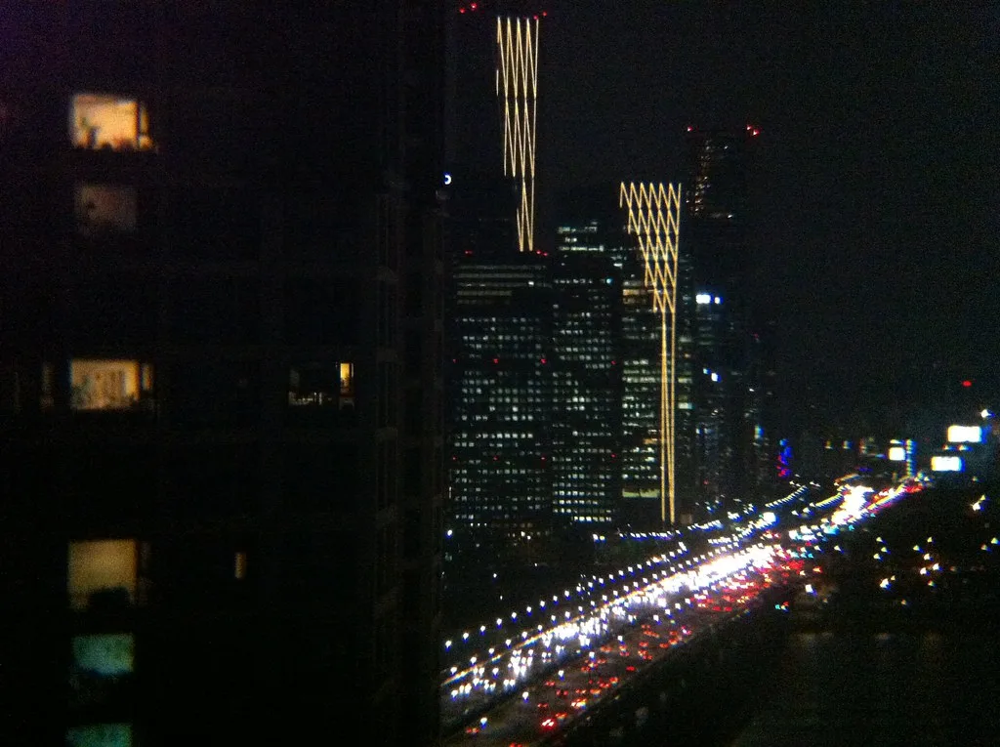

코스피가 하루 만에 5% 넘게 떨어지며 4800선으로 주저앉았다. 20일 유가증권시장에서 코스피는 전 거래일보다 267.93포인트(5.21%) 내린 4869.96에 장을 마쳤다. 전날 1.39% 오르며 5137.89로 마감해 5100선을 회복했던 지수가 불과 하루 만에 상승분을 모두 반납하고 더 깊이 내려간 것이다. 시장에서는 이날을 두고 '검은 금요일'이라는 표현까지 나왔다.
종가 기준으로 코스피가 4800선에서 거래를 마친 것은 올해 1월 이후 약 10개월 만이다. 지수가 '5천피' 아래로 다시 내려간 것도 3거래일 만이다. 코스닥 시장의 충격은 더 컸다. 코스닥 지수는 39.13포인트(5.71%) 하락한 645.68에 마감하며 코스피보다 큰 낙폭을 기록했다. 두 시장이 동시에 5% 넘게 빠지면서 투자자들의 불안 심리가 크게 확산됐다는 평가가 나온다. 지수 수준이 높아진 만큼 하루 267포인트라는 낙폭은 포인트 기준으로도 손에 꼽힐 만한 규모다.

지수를 끌어내린 것은 외국인과 기관의 대규모 매도였다. 유가증권시장에서 외국인은 약 1조1천억원, 기관은 약 9500억원어치를 순매도해 두 주체의 매도 규모만 2조원을 넘었다. 집계 기준에 따라 매체별 수치는 조금씩 다르게 보도됐다. 외국인은 6거래일 연속 순매도를 이어간 것으로 전해졌다. 반면 개인 투자자는 약 1조6천억원어치를 사들이며 매물을 받아냈지만 지수 하락을 막기에는 역부족이었다.
업종별로는 지수 비중이 큰 반도체 종목의 하락이 두드러졌다. 삼성전자는 7%가량, SK하이닉스는 5.9% 떨어지며 지수 하락을 주도했다. 두 종목이 코스피 시가총액에서 차지하는 비중이 큰 만큼 이들의 주가 흐름이 지수 전체를 좌우하는 구조다. 시장에서는 미국 인공지능(AI) 기업 앤트로픽의 대형 상장 이후 기술주 전반에 차익 실현 매물이 쏟아진 데다, 미국 반도체 기업 AMD를 겨냥한 공매도 보고서와 대중국 반도체 수출통제 강화 우려가 겹친 것을 주요 원인으로 꼽았다.
AI 산업에 대한 기대가 주가를 끌어올려 온 만큼, 그 기대에 대한 의구심이 고개를 들 때 반도체 대형주에 매도가 집중되는 구조가 이번에도 되풀이됐다는 분석이 나온다. 국내 증시는 이달 초에도 하루 5% 넘게 급락한 적이 있어 변동성이 유난히 커진 상황이다. 단기간에 지수가 크게 오르내리면서 개인 투자자들 사이에서는 대응 전략을 놓고 혼란스럽다는 반응도 적지 않다.

더 큰 부담은 바다 건너에서 이어졌다. 국내 장이 끝난 뒤 열린 20일(현지시간) 미국 뉴욕증시에서는 나스닥 지수가 5% 넘게 폭락하고 다우와 S&P500 지수가 고점 대비 10% 이상 떨어진 조정 국면에 들어섰다. 엔비디아와 AMD 등 반도체 대표 종목이 두 자릿수 하락률을 기록한 만큼, 다음 주 국내 반도체주와 지수 흐름에도 부담이 될 수 있다는 우려가 나온다.
전문가들은 당분간 미국 기술주 흐름과 다음 달 미국 연방준비제도(Fed)의 통화정책 결정, 외국인 수급 변화를 함께 지켜봐야 한다고 조언한다. 지수가 짧은 기간 크게 하락한 만큼 기술적 반등 가능성도 거론되지만, AI 투자 수익성 논란과 금리 불확실성이 해소되기 전까지는 변동성 장세가 이어질 수 있다는 신중론이 우세하다. 공포에 따른 투매나 무리한 추격 매수보다 분산 투자와 현금 비중 조절 등 위험 관리에 집중해야 한다는 조언도 뒤따른다.